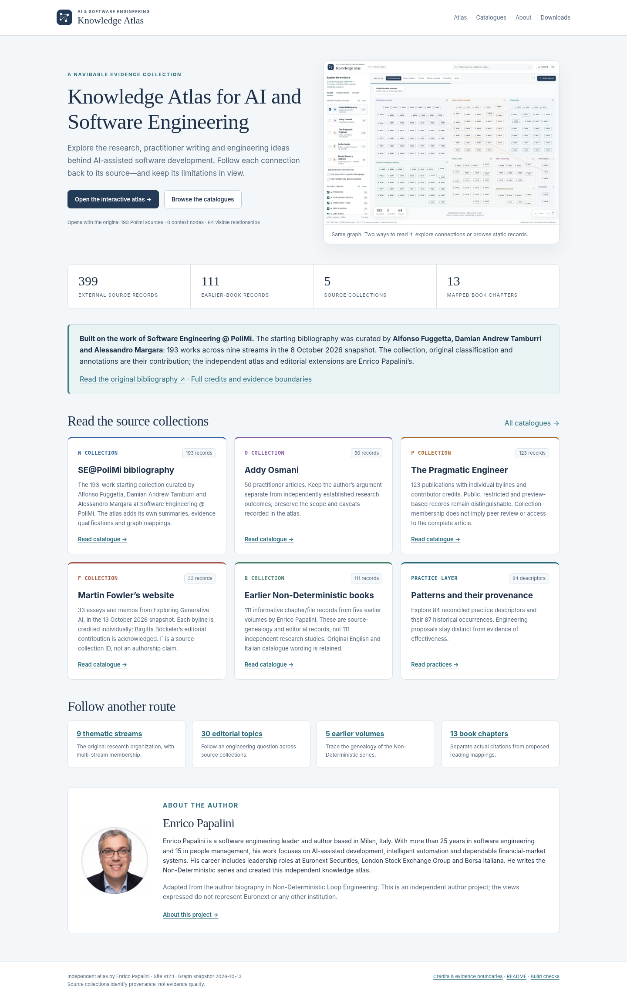
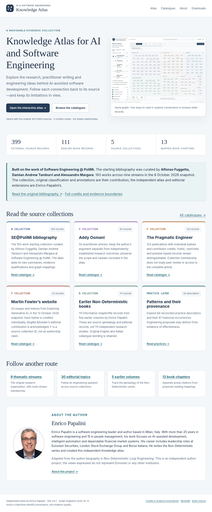
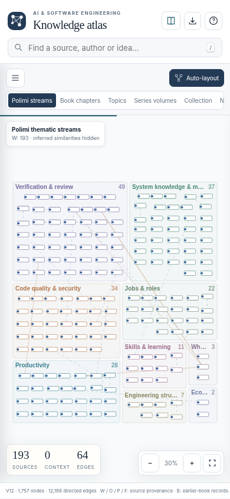
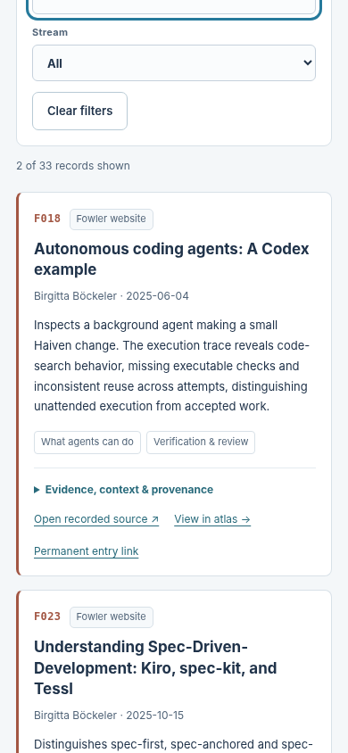

Website release v12.1 · 14 October 2026
Release verification
A complete static website around the frozen v12 Knowledge Atlas. This is a presentation and packaging release, not a new research audit.
What is included
The package includes a landing page, the existing interactive atlas, static catalogue pages for the five source collections, one page for each stream/topic/earlier volume/book chapter, practice and occurrence catalogues, an author page and portrait, JSON/CSV data, the original graph exports, the inherited catalogue files, a README and deployment instructions. Catalogue content is present in HTML without JavaScript.
| Area | Result | Scope |
|---|---|---|
| Graph data | 1,757 nodes · 12,188 keyed relationships · 297 relationship types | All original payload fields retained; no new source claims. |
| Static records | 193 W · 50 O · 123 P · 33 F · 111 B | 510 source records, each present in HTML and complete-node JSON. |
| Practice layer | 84 descriptors · 87 historical occurrences | Kept separate from empirical evidence. |
| Group pages | 9 streams · 30 topics · 5 earlier volumes · 13 chapters | Actual chapter citations and editorial mappings labelled separately. |
| Default atlas | 193 sources · 0 context nodes · 64 edges | Exact default source and edge IDs checked. |
| Structural validation | 176 passed · 0 failed | 17,175 local link/asset/fragment references checked across 76 active HTML pages. |
| Browser validation | 88 passed · 0 failed | Includes an exact keyed-edge comparison for each of all 297 relationship switches. |
| Responsive / photo checks | 7 passed · 0 failed | Desktop, tablet and mobile-sized Chromium viewports; real portrait loads on scroll. |
| Reproducible build | 101 of 101 generated outputs identical | Two consecutive local builds matched by SHA-256, including the catalogue ZIP. |
What the checks do not establish
External source URLs were inventoried rather than checked afresh. Original restricted-access qualifications, source-audit boundaries and editorial mappings remain unchanged. No empirical replication, field-pilot result or institutional endorsement is implied.
Attribution and author photo
The starting bibliography is credited prominently to Alfonso Fuggetta, Damian Andrew Tamburri and Alessandro Margara, Software Engineering @ PoliMi. Each added collection retains its actual authorship; the Fowler collection acknowledges Birgitta Böckeler’s editorial contribution.
The author portrait was extracted from Enrico Papalini’s own Non-Deterministic Loop Engineering author page (PDF page 277 / printed page 265), composited with its alpha mask on white and resized to 631 × 640 pixels. No generative modification was applied. The short biography is adapted from that page and does not assert an independently rechecked current job title.
Verification records
Rendered checks







